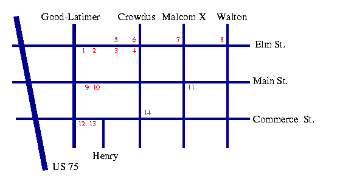
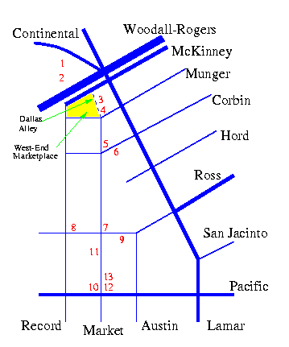

Restaurants and Nightlife in Dallas
This restaurant guide is based on
GuideLive,
Dallas Dines Out,
and my personal preferences.
The dollar signs below indicate the cost in dollars of an
average complete dinner per person, including appetizer, entree, and dessert:
$ less than 10, $$ 10-25, $$$ 25-50, $$$$ more than 50
I have classified the restaurants in some neighborhoods into two categories:
Recommended and Other Choices. All recommended restaurants
are excellent, while the other choices are nice alternatives.
You can read the GuideLive review of a restaurant by clicking on the name.
The restaurants listed here are either short walk away from the hotel
or a short ride by bus or light rail. There are many other neighborhoods
with very good restaurants, such as Knox street, lower Greenville, and Oak Lawn,
which can be reached by taxi. Please look at the
100 best restaurants for a list
or take a tour of the Dallas entertainment areas.
Enjoy!
Near the Hotel
There is a nice restaurant on the 38th floor at Adam's Mark:
There are many fast food restaurants (about 20) inside the Plaza of the Americas (Le Meridien hotel),
which is connected to our hotel with an elevated walkway.
There are two good restaurants inside:
My best pick close to the hotel is:
- La Madeleine, french bakery, $, Pearl St. at San Jacinto, 3 blocks north of the hotel,
breakfast and lunch on weekdays only, excellent breakfast, salads, sandwiches, desserts.
Other choice:
- Momo pasta express, italian, $, corner of Pacific and Live Oaks, two blocks west of the hotel.
Deep Ellum
Deep Ellum is an area east of downtown Dallas with many nightclubs and
restaurants. It doesn't look very impressive
during the day but it becomes very alive at night, especially during
the weekends. You can get more information on the nightclubs and
current events from these web pages: 1
and 2.
To reach Deep Ellum from the conference site, walk
two blocks south from the main hotel entrance on Olive street
until you get Elm street. You turn left on Elm street and walk
underneath the highway ramp (US 75) on Elm, passing across the Good-Latimer
boulevard. It is about 15 minutes walk. If you return back to the hotel alone
late at night, I will advise to get a taxi, because the area underneath the highway ramp is not safe.

Recommended
5. The Green Room, new american/mediterranean, $$-$$$
menu, excellent wine list.
1. Sambuca, mediterranean/live-jazz, $$-$$$,
great live jazz and great food.
14. Ketama Flamenco Guitar and Tapas Bar, spanish, $-$$.
11. Monica's Aca y Alla, mexican, $$, innovative menu.
6. Daddy Jack's, seafood, $$-$$$
2. Deep Sushi, japanese, $$-$$$
Other Choices
8. Pepe's and Mitos, mexican, $-$$
13. Sol's Taco Lounge, healthy mexican, $$
9. Sushi Nights, japanese, $-$$
3. MoMo's Pasta, italian, $$
10. Mel's on Main, continental, $$
7. Cafe Brazil, cafe, $, great for breakfast/late dinner.
4. Deep Ellum Cafe, cafe, $$, nice garden at the back, good for Sunday brunch.
6. Omega, tex-mex, $$
12. Blue Cat Blues, live blues, excellent bands.
West End
In contrast to Deep Ellum, West End is highly polished, full of franchise restaurants, and a magnet
for tourists. Locals though (especially youngsters) prefer the hip
Deep Ellum. You can reach West End by riding either the light rail or
the bus (Loops A and B). The light rail
is very convenient as it stops outside the hotel and next to West End. The ticket is $1.00 each way.
The bus loops A and B
are very cheap (50 cents) and, like the light rail, very convenient since they stop outside the hotel.
The West-End marketplace is a warehouse (a real warehouse, not data-) with many tourist
shops, movie theaters, fast food restaurants, etc. Next to the West End marketplace, there is an alley, called the
Dallas Alley, with many bars and live music. The cover is $5 and allows you entrance to five stages.
The music is mostly Country and Western.

Recommended
1. Newport's, seafood, $$$, menu.
9. Y.O. Ranch, southwestern, $$-$$$, menu
2. A.J. Gonzales, mexican, $$
11. Lobardi's, italian, $$-$$$
7. Palm, steaks, $$$
12. Sonny Bryan's, barbecue, $
Other Choices
6. On the Border, mexican, $-$$ , nice fajitas.
4. Joe's Crab Shack, seafood, $$
10. Corner Bakery, bakery, $, great sandwiches/coffees - lunch only.
8. Blue Mule, live blues, $-$$, menu.
3. Spiatza Pizza & Pasta, $
13. Landry's, seafood, $-$$
5. Cadillac Bar, mexican, $$, unimpressive tex-mex food but great patio for people-watching.
Downtown
The best downtown restaurants are located inside hotels.
The bus
loops A, B, and C, which stop outside our hotel, are very cheap (50 cents) and very convenient
for visiting the restaurants downtown. Each bus stop has the route map. If you are planning to go to an expensive
restaurant though, such as the French Room, you may consider getting a taxi.
In the luxurious hotel Adolfus you can find two excellent restaurants:
Near and inside Neiman Marcus (on Ervay and Commerce) you can find:
Other places downtown:
- Pyramid Room, new american, $$$, at Fairmont hotel.
- Avanti Cafe, italian, $-$$, menu, on Ross and Field (overlooking a garden with 1000 fountains).
- Yorkshire Club, on 48th floor in Republic tower, St. Paul at rail tracks.
- Dakota's, new american, $$-$$$, on Akard St. at San Jacinto (under street level).
- Seventeen Seventeen, inside the Dallas museum of Art (second floor),
excellent choice for Sunday brunch.
Uptown
All the restaurants below are on McKinney Street, uptown.
You can reach them by riding the electric vintage trolley (McKinney Avenue Streetcar), which you can get on St. Paul street next to the Dallas Museum of Art.
The ride costs 75 cents and it's about 15 minutes each way. It's great fun. Just tell the driver which restaurant you'd like to go.
Recommended
- Watel's, french, $$-$$$, best bistro.
- Le Paris Bistrot, french, $$-$$$, great patio for people-watching.
- Beau Nash at the Crescent hotel, new american, $$, menu.
- Palomino at the Crescent hotel, italian, $$-$$$.
- Avanti Ristorante, italian, $$, menu.
- S & D Oyster Company, seafood, $$.
- Bizu, $$-$$$, french.
- La Trattoria Lombardi, italian, $$-$$$.
Other Choices
- Breadwinners, cafe/bakery, excellent breakfast and Sunday brunch.
- Dream Cafe, good Sunday brunch, families with kids mostly (one block north of McKinney) .
- Cork, wine bar, very good wine list.
Last updated: Feb 23, 2000
(by LF)